Наука · журнал «ДентАрт» 2016 №1
Професійна гігієна порожнини рота у пацієнтів з генералізованим пародонтитом, ускладненим гіперестезією зубів
PROFESSIONAL ORAL HYGIENE OF PATIENTS WITH GENERALIZED PERIODONTITIS COMPLICATED BY DENTAL HYPERESTHESIA
Серед усієї різноманітності стоматологічних захворювань некаріозні ураження зубів займають особливе місце. Наукові дослідження, присвячені вивченню цієї проблеми, згідно з даними літератури, ведуться вже понад двісті років. Однак і донині питання етіології, патогенезу і особливостей клінічних проявів некаріозних уражень висвітлені в літературі менше у порівнянні з іншими нозологічними формами стоматологічних захворювань, такими, як карієс і хвороби тканин пародонту. Особливе значення проблема некаріозних уражень набуває з огляду на те, що згідно з даними епідеміологічних досліджень, їх поширеність в останні десятиріччя значно зросла, що, на думку ряду авторів, пов'язане як з погіршенням екологічних умов проживання людини, так і з ростом супутньої інтернальної патології.
Серед некаріозних уражень, що розвиваються після прорізування зубів, найпоширенішою є гіперестезія твердих тканин зубів. Її основна клінічна ознака — виражений короткочасний гострий біль, що виникає під дією хімічних, термічних і тактильних подразників. Більшість авторів визнає, що гіперестезія твердих тканин зубів може виступати як самостійна нозологічна форма, а може бути симптомом інших стоматологічних захворювань. Зокрема, її діагностують у більш ніж 90% хворих з патологічним стиранням зубів, клиноподібними дефектами, ерозіями емалі, а також генералізованим пародонтозом, у симптомокомплекс якого входять усі зазначені види некаріозних уражень (фото 1-3).

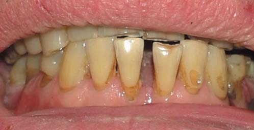
Фото 1. Пацієнт Ж., 68 років. Д-оз: генералізований пародонтоз І-ІІ ст., генералізована ГТТЗ ІІІ ст. тяжкості, товстий біотип ясна. Некаріозні ураження твердих тканин зубів: а — ерозії, б — клиновидні дефекти, в — патологічна стертість зубів горизонтального типу, г — патологічна стертість зубів вертикального типу.
Отримані нами дані про наявність специфічних морфологічних ознак і клінічних особливостей перебігу гіперестезії при генералізованому пародонтиті (фото 4) дозволили виділити самостійну клінічну форму гіперестезії твердих тканин зубів (ГТТЗ) — цервікальну гіперестезію (ЦГ) (Білоклицька Г.Ф., Копчак О.В., 2003-2013). Як ми встановили, патогенез ЦГ тісно пов'язаний з патогенезом генералізованого пародонтиту (ГП). У результаті руйнування циркулярної зв'язки, втрати зубоясенного епітеліального прикріплення і прогресуючої втрати емалевого і цементного шарів з появою можливої рецесії ясен відбувається розкриття входу в дентинні канальці у пришийковій зоні та верхній третині кореня. Формування пародонтальних кишень призводить до інтенсивного утворення під'ясенних зубних відкладень і активації резорбтивних процесів не тільки у кістковій тканині альвеолярного відростка, а й на поверхні кореня, яка піддається впливу агресивного мікрооточення (Білоклицька Г.Ф., 1996; Білоклицька Г.Ф., Копчак О.В., 2006, 2008).
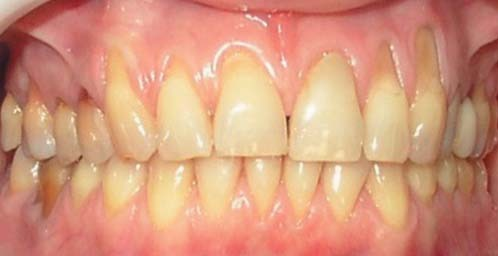
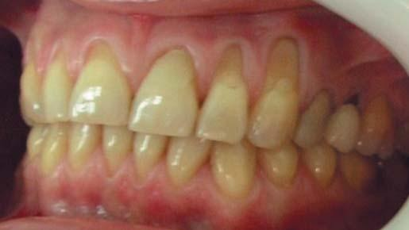
Фото 2. Пацієнтка Г., 42 роки. Д-оз: генералізований пародонтоз I-II ст. за Міллером (тонкий біотип ясна), змішана форма патологічної стертості II ст., генералізована ГТТЗ III ст. тяжкості.
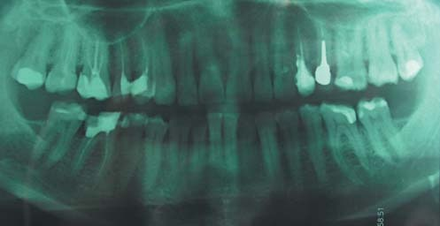
Фото 3. Ортопантомограма пацієнтки Г., 42 роки. Д-оз: генералізований пародонтоз I ст. тяжкості (див. фото 2).
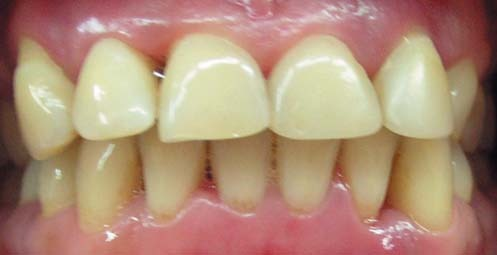
Фото 4. Пацієнтка Г., 43 роки. Д-оз: генералізований пародонтит I-II ст., хронічний перебіг, генералізована ГТТЗ III ст. тяжкості.
При проведенні растрової електронної мікроскопії (РЕМ) було виявлено низку структурних відмінностей у твердих тканинах зубів з ГТТЗ, що виникли на тлі захворювань пародонту (Білоклицька Г.Ф., Копчак О.В., 2006), у порівнянні з інтактними зубами (група порівняння). У зубах групи порівняння емаль здебільшого характеризувалася згладженим рельєфом з незначними нерівностями, під якими візуалізувалися нечітко виражені контури емалевих призм (фото 5). На поверхні емалі окремих зубів помітні механічні ушкодження у вигляді тріщин і подряпин. На поздовжньому шліфі зубів спостерігалася нормальна структура емалі, плащового та навколопульпарного дентину з незначними індивідуальними особливостями, які стосувалися ширини міжпризматичних просторів в емалі і щільності канальців у плащовому дентині.
У пришийковій ділянці була чітка межа емалі і цементу. Край емалі був рівний, її структура у пришийковій ділянці не порушена, хоча і характеризувалася менш чіткою орієнтацією призм (фото 6). Співвідношення емалі і цементу характеризувалися нашаруванням емалі на цемент в 6 зубах (60%) і нашаруванням цементу на емаль в 4 зубах (40%). Шар цементу був тонкий, але його цілісність зберігалася по всій поверхні кореня. У значній більшості спостережень на поверхні кореня відзначали пучки волокон, які безпосередньо впліталися у поверхню цементного шару і були залишками періодонтальної зв'язки.
У зубах з ГТТЗ, що виникла на тлі генералізованого пародонтиту, було виявлено такі структурні порушення. По емалево-цементній межі край емалі був переривчастий, підритий, визначалися численні мікросколи, узури і дигісценції емалі (фото 7), міжпризматичні простори були розширені, форма емалевих призм порушена, але ступінь деформації призм відрізнялася в різних зубах і навіть на різних ділянках одного і того ж самого зуба (фото 8). У цілому структурна організація емалі була збережена, значних за розміром дефектів виявлено не було.
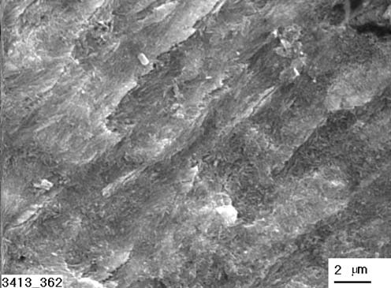
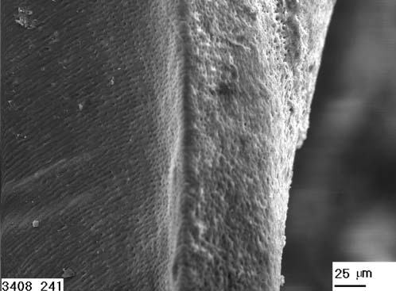
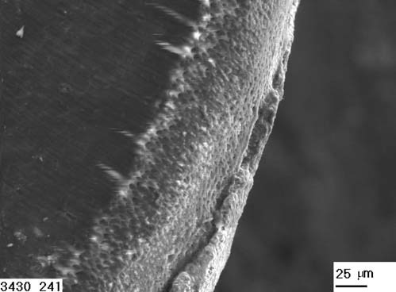
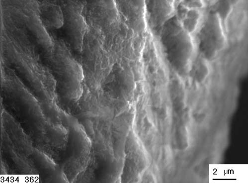
Найбільш постійною ознакою, яка визначалася у всіх зубах з ГТТЗ, була втрата цементного шару верхньої і середньої третини кореня, що призводило до оголення зони прилеглого плащового дентину (фото 9 а). Розміри цієї зони визначалися ступенем втрати зубо-ясенного епітеліального прикріплення. Залишки цементного шару було виявлено лише в зоні дна пародонтальної кишені, а його повноцінна структура спостерігалася тільки в зоні збереженого прикріплення періодонтальних волокон (фото 9 б).
У зубах з ГТТЗ закономірно визначали наявність відкритих дентинних канальців на поверхні оголеного дентину, але їх щільність була однаковою. У цілому найчастіше виявляли вищу щільність відкритих дентинних канальців у пришийковій ділянці і її зниження апікально. На оральній поверхні кількість відкритих канальців була трохи меншою, ніж на вестибулярній. На поверхні кореня у деяких місцях було виявлено ділянки утворення змазаного шару, де кількість відкритих дентинних канальців була значно меншою, однак вони виявлені навіть на цих ділянках.
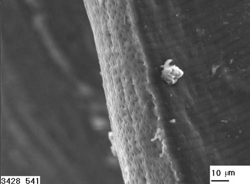
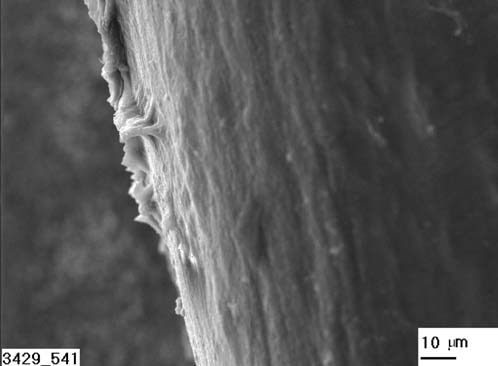
Фото 9. РЕМ зуба 31 з ГД II ст.: а — ділянка оголеного дентину середньої третини кореня. Є відкриті дентинні канальці, структура підповерхневих шарів дентину не порушена; б — нижня третина кореня. Цементний шар збережений, відсутність відкритих дентинних канальців на ділянці зі збереженими прикріпленнями волокон періодонту. Мікрофото x 540.
Зона з відкритими дентинними канальцями поширювалася від пришийкової ділянки на верхню і середню третини кореня і переходила в зону, покриту змазаним шаром або цементом на ділянці дна пародонтальної кишені (фото 10). У плащовому дентині пришийкової ділянки було виявлено такі зміни: розширення діаметру дентинних канальців зі зміною форми їх просвіту (вона була більш витягнутою, овальною або еліпсоїдною, у деяких випадках полігональною або неправильною). Значний поліморфізм був характерний не лише для форми, а й розмірів канальців (фото 11). У зубах групи порівняння в той же час просвіт канальців був овальної або округлої форми, з незначними коливаннями величини їх діаметру (фото 12).
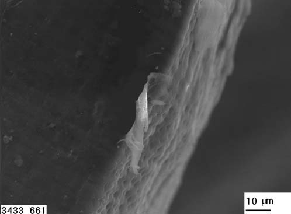
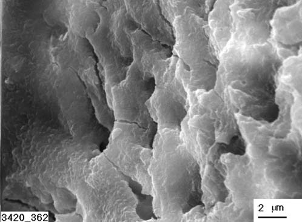
Кількість канальців у зоні емалево-дентинного з'єднання в зубах з гіперестезією дентину достовірно не відрізнялася від інтактних зубів. Одночасно зміни в діаметрі канальців у зоні оголеного дентину мали статистично достовірний характер (р <0,01). Так, діаметр розкритих дентинних канальців у зубах з ГТТЗ сягав 5,6 мкм і в середньому становив 2,9±0,2 мкм. У зубах групи порівняння діаметр канальців у зоні з'єднання емалі та дентину не перевищував 3 мкм і в середньому становив 1,8±0,25 мкм. У той же час у навколопульпарному дентині, у порівнянні з групою порівняння, змін виявлено не було. Це стосувалося і коронкової частини зубів.
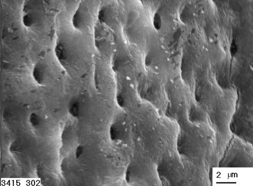
Фото 12. РЕМ інтактного зуба 48. Просвіт канальців плащового дентину пришийкової ділянки має округлу або овальну форму з незначними коливаннями діаметра. Мікрофото x 3000.
Напівкількісний рентгеноструктурний аналіз дозволив нам отримати детальне уявлення про морфологічні передумови виявлених порушень. У твердих тканинах зубів, уражених ГТТЗ, спостерігалося зниження вмісту кальцію у порівнянні з інтактними зубами. В емалі його вміст був на 19% нижчим, ніж у групі порівняння (р <0,05), а в дентині пришийкової ділянки — на 27% (р <0,01). Отримані нами дані дозволили зробити висновок, що локальні порушення кальцій-фосфорного метаболізму можуть бути однією з причин неспроможності компенсаторно-захисних механізмів, типових для ГТТЗ, зокрема формування змазаного шару і звуження просвітів дентинних канальців. Формування змазаного шару, виявлене на окремих ділянках зубів, було обмеженим і не перекривало відкриті канальці, а лише призводило до зменшення їх кількості. Одночасно руйнування кристалів гідроксиапатиту у міжканальцієвих проміжках призводило до збільшення просвіту канальців і поліморфізму їхньої форми.
Сучасні теорії патогенезу ГТТЗ, в яких провідне значення відводять ролі поєднаного впливу абразивних та ерозійних факторів, що призводять до поступового руйнування на певних ділянках зуба емалевого шару з оголенням дентинних канальців, не можуть пояснити низку клінічних особливостей у перебігу гіперестезії твердих тканин зубів при захворюваннях пародонту. Як правило, генералізовані форми гіперестезії у пацієнтів із захворюваннями пародонту виникають без очевидного етіологічного зв'язку із зазначеними вище чинниками. Наші клінічні спостереження дозволили виявити, що при генералізованому пародонтиті виникнення гіперестезії твердих тканин зубів пов'язане з втратою альвеолярної кісткової тканини, рецесією ясен, загостренням у перебігу генералізованого пародонтиту і т.д.
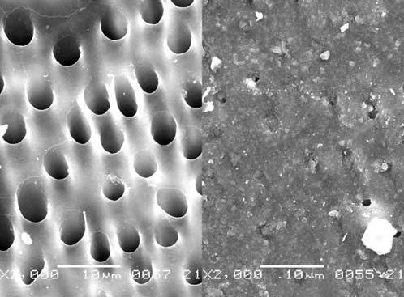
Фото 13. Обтурація відкритих дентинних канальців шляхом формування захисного мінерального шару в результаті застосування лікувально-профілактичної пасти Nupro Sensodyne (NovaMin — кальцій-фосфатна технологія) (Litkowski et al.: Occlusion of dentin tubules by 45S5 bioglass. Bioceramics 1997; 10: 411-414).
Морфологічною основою виникнення гіперестезії дентину у цієї категорії пацієнтів є порушення, які відбуваються у поверхневих шарах твердих тканин пришийкової ділянки і кореня зуба. Їх основним компонентом є втрата цементного шару і оголення прилеглого дентину, що безпосередньо пов'язано з прогресуванням втрати епітеліального прикріплення і формуванням пародонтальної кишені. Можна припустити, що прогресування пародонтиту здатне призводити до збільшення площі оголеного дентину і, відповідно, посилення больових відчуттів. На відміну від інших форм гіперестезії, при яких відбувається переважно руйнування емалі, при гіперестезії твердих тканин зубів, яка виникає на тлі захворювань пародонту, зміни в емалевому шарі менш значущі.
Втрата цементного шару може бути зумовлена кількома факторами, зокрема безпосередньою дією зубних відкладень, продуктів життєдіяльності мікроорганізмів і агресивного мікрооточення, пов'язаного з наявністю запального вогнища в тканинах пародонту, чищенням зубів на ділянках з наявністю рецесії ясен, професійними гігієнічними процедурами із застосуванням агресивного апаратного скейлінгу (наприклад, звуковий скейлінг). Комплекс специфічних морфофункціональних порушень, який ми виявили, вказує на необхідність застосування протекторних засобів, здатних купірувати больовий синдром, викликаний ГТТЗ, при проведенні сеансів професійної гігієни ротової порожнини як на етапі первинного пародонтологічного лікування, так і на етапі підтримуючої терапії генералізованого пародонтиту, а також мотивує лікарів-стоматологів вибирати найменш інвазивні апаратні методи видалення мінералізованих зубних відкладень.
Нині загальновизнано, що застосування магнітострикційних ультразвукових технологій — найменш травматичний метод зняття мінералізованих зубних відкладень. У зв'язку з цим у нашій клініці для професійної гігієни порожнини рота (в тому числі пацієнтам із захворюваннями тканин пародонту із супутньою ГТТЗ) використовується магнітострикційний ультразвуковий скейлер Cavitron Select SPS з резервуаром (Дентсплай). Цей ультразвуковий скейлер досить мобільний і зручний в обігу, забезпечений широким спектром адаптованих під різні поверхні зуба гігієнічних і зоноспецифічних пародонтологічних насадок, з можливістю фокусованої подачі води. Наявність регульованого рівня потужності дозволяє лікареві працювати в комфортній для пацієнта BlueZone у поєднанні з підігрівом води в наконечнику, що забезпечує повну блокаду больових відчуттів за наявності гіперестезії твердих тканин зубів І-ІІ ступенів тяжкості.
Однак за наявності у хворого ГП, ускладненого гіперестезією твердих тканин зубів ІІІ ступеня тяжкості, зазначених можливостей апарата Cavitron для усунення больових відчуттів, характерних для гіперестезії, не завжди достатньо. У такій ситуації для повного усунення больових відчуттів під час і після проведення сеансів апаратного скейлінгу необхідно додатково застосувати лікувально-профілактичну пасту Nupro Sensodyne. Лікувально-профілактична паста Nupro Sensodyne (Дентсплай), що містить NovaMin (фосфосилікат кальцію і натрію), призначена для професійного чищення та полірування зубів до і після процедур видалення зубного каменю у пацієнтів з генералізованим пародонтитом, ускладненим ГТТЗ, і поєднує три ефекти: зняття відкладень, полірування, десенситайзер (3 в 1). При нанесенні Nupro Sensodyne (біоактивне скло (Na, Ca, P)) відбувається миттєве вивільнення іонів натрію (підвищення pH), Ca і Р на поверхні зуба зі стійкою обтурацією відкритих дентинних канальців шляхом формування захисного мінерального шару (NovaMin — унікальна кальцій-фосфатна технологія) (фото 13).
Повний ефект зниження чутливості досягається при втиранні пасти протягом 60 секунд спеціальними гумовими чашечками, а за наявності діастем/трем, нерівних поверхонь — спеціальними щіточками. Алгоритм застосування лікувально-профілактичної пасти Nupro Sensodyne з комплексом NovaMin для лікування гіперестезії твердих тканин зубів простий і доступний:
- нанести пасту на попередньо висушену поверхню зубів;
- втирати пасту протягом 60 секунд;
- змити струменем води;
- прополоскати ротову порожнину водою або ополіскувачем.
Послідовність застосування лікувально-профілактичної пасти Nupro Sensodyne з комплексом NovaMin для зниження гіперестезії твердих тканин зубів під час проведення професійної гігієни ротової порожнини (фото 14) відрізняється тільки тим, що її втирають двічі: до і після проведення сеансу профгігієни.
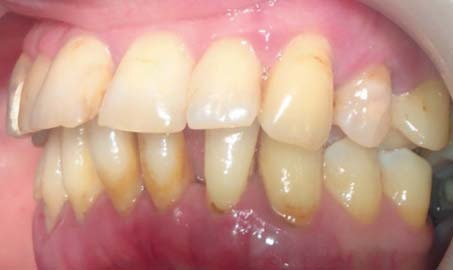
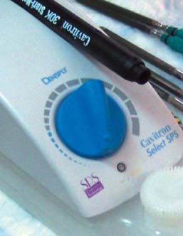
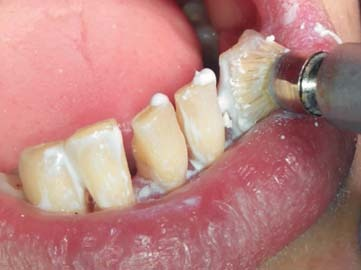
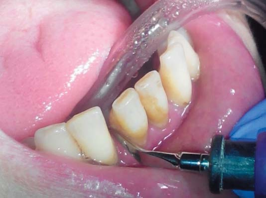
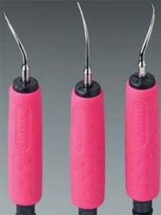
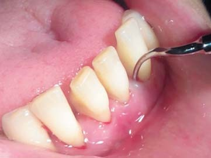
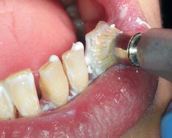
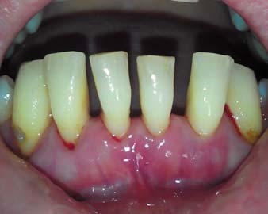
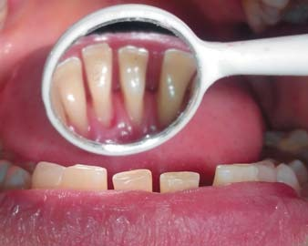
Фото 14. Пацієнтка В., 49 років. Д-оз: генералізований пародонтит II-III ступеня, хронічний перебіг, ГТТЗ III ступеня: а — до проведення професійної гігієни з використанням апарата Cavitron Select SPS з резервуаром; б — I етап — втирання пасти Nupro Sensodyne; в — II етап — зняття над'ясенних зубних відкладень (гігієнічні насадки серії Bellissima Inserts); г — III етап — зняття під'ясенних зубних відкладень (зоноспецифічні пародонтологічні насадки серії Bellissima Inserts); д — IV етап — повторне втирання пасти Nupro Sensodyne; е, ж — після завершення сеансу професійної гігієни ротової порожнини.
Висновки
Використання лікувально-профілактичної пасти Nupro Sensodyne з комплексом NovaMin у пацієнтів із захворюваннями тканин пародонту на етапі первинного пародонтологічного лікування, що включає професійний УЗ скейлінг, дозволило усунути прояви гіперестезії твердих тканин зубів у 98% хворих, що свідчить про її високу терапевтичну ефективність. Отримані результати дозволяють рекомендувати цей засіб для лікування гіперестезії твердих тканин зубів до впровадження у широку стоматологічну практику.
Література
- Белоклицкая Г.Ф. Клинико-патогенетическое обоснование дифференцированной патогенетической фармакотерапии генерализованного пародонтита: Автореф. дис. докт.мед.наук. — К., 1996. — 32 с.
- Белоклицкая Г.Ф. Возможность устранения цервикальной гиперестезии при использовании зубной пасты «Sensodyne-F» // Современная стоматология. — 2002. — №4. — С. 31-34.
- Горбуленко В.Б., Шостаковская С.Ю., Яковлева В.Я. Изменение неорганического кальция и фосфора, рН среды слюны при гиперестезии твердых тканей зубов // Новое в стоматологии. — 2003. — №2. — С. 70-73.
- Копчак О.В. Патогенетичне обґрунтування диференційованих підходів до лікування гіперестезії дентину при захворюваннях пародонту: Автореф. дис… канд. мед. наук. — К., 2006. — 21 с.
- Луцкая И.К. Гидродинамические механизмы чувствительности твердых тканей зуба // Новое в стоматологии. — 1998. — №4. — С. 23-27.
- Несин А.Ф., Компанец И.Ю., Компанец Т.В. Гиперестезия зубов // Современная стоматология. — 2000. — №3. — С. 34-38.
- Радван-Очко М. Гіперчутливість шийок зубів: етіологія та лікування // Новини стоматології. — 2003. — №4(37). — С.41-43.
- Синиців Р.Г., Жеребко О.М., Коваль С.М. Особливості прояву та лікування генералізованої форми гіперестезії твердих тканин зубів // Вісник стоматології. — 1998. — №1. — С.29-32.
- Федоров Ю.А., Дрожжина В.А. Клиника, диагностика и лечение некариозных поражений зубов. Новые данные о распространенности, клинике и особенностях лечения некариозных поражений зубов // Новое в стоматологии. — 1997. — №10. (специальный выпуск). — 45 с.
Повний список літератури в редакції.